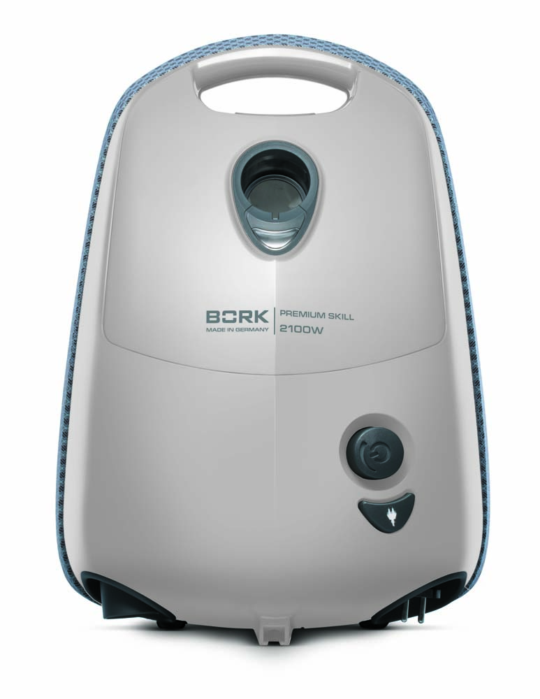
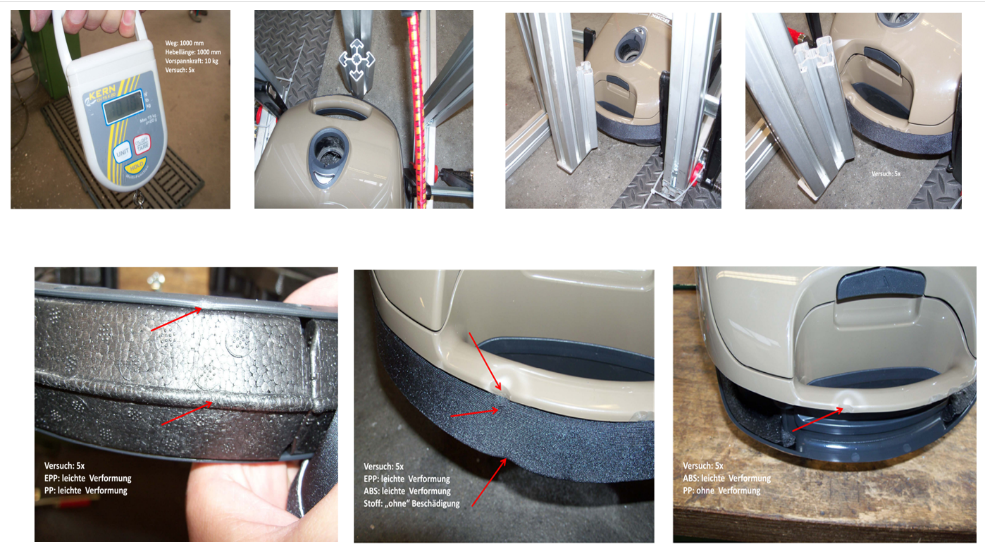
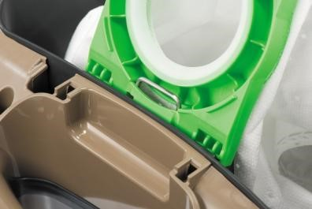
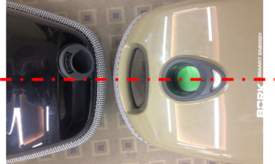
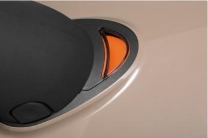
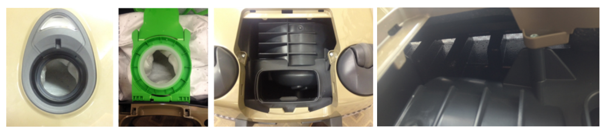
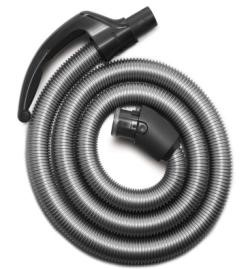
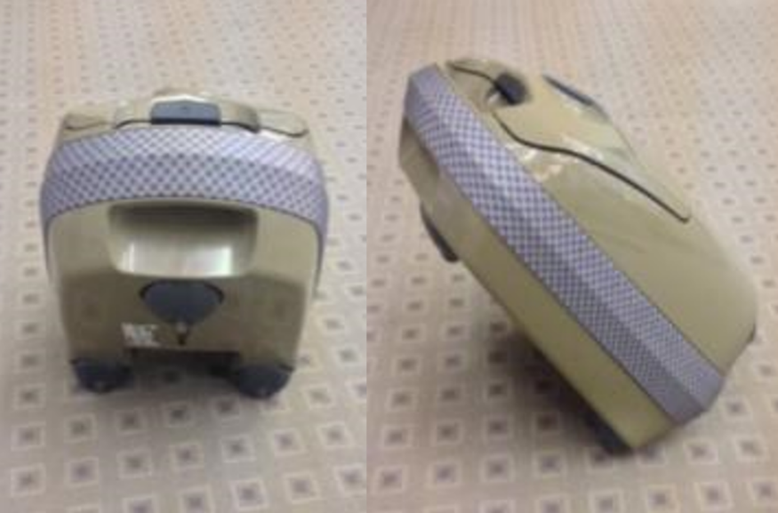

Пылесос BORK V709
Система сбора пыли ElectroBag

Объем пылесборника 3.5 литра.
При удалении из пылесоса пылесборник герметично закрывается пластиковой крышкой. Такой пылесборник специально разработан для удобства людей, страдающих от аллергии, а также для тех, кто предъявляет повышенные требования к гигиене.
Если вынуть Electro-Grade Filter и включить пылесос, то можно показать его объем.
Новая конструкция противоударного бампера

Бампер надежно защищает мебель, стены и пылесос от механических повреждений, обеспечивает дополнительный комфорт при уборке, эффективно снижая уровень шума, а также выполняет декоративную функцию. Бампер состоит из трех компонентов: ударопрочного основания, мягкого резинового обода и сверхпрочного тканого материала. Процесс смены бампера стал намного проще. Материал ЕРР (Extruded Polypropile) более прочный, чем бампер прошлого поколения.
Проведенные на заводе тестирования по сравнению прочности бамперов прошлого и нового поколения подтвердили улучшенные свойства нового бампера.
Этот тест соответствует экстремальному случаю. Пылесос падает со стола с «силой» 10 кг. В результате, новая серия после 5 испытаний немного пострадала, но все осталось целым.

У пылесосов прошлого поколения после 2 испытаний треснула ручка, материал бампера немного порвался.
Отсутствует рамка пылесборника
Отсутствует рамка мешка, которая может быть утеряна при удалении пылесборника (это плюс, по сравнению к другим производителям). Потребитель экономит деньги. Процесс замены мешка стал проще, благодаря запатентованной технологии – без рамки.
Интеллектуальный термоконтроль
В случае повышения температуры (из-за переполненного пылесборника или засора воздушных путей) в пылесосе:

Загорается красная лампочка, мощность пылесоса автоматически понижается, чтобы охладить пылесос. Пылесос работает дальше.
В случае экстремальный температуры/засора воздушных путей пылесос выключается.
Оптимизированные колёсная база

За счет чего пылесос стал более маневренным и легко переезжает мелкие препятствия и кабель. Колесики легче вращаются, что легко продемонстрировать покупателю.
Симметричность корпуса
Ручка и вход шланга находятся посередине корпуса, тем самым пылесос ровно и плавно следует за пользователем.
Механическая индикация засорения
Позволяет контролировать прогресс заполнения пылесборника. Включение оранжевого светового индикатора означает ограничение воздушного потока. Это указывает на заполнение пылесборника или на засорение воздушного канала. Чтобы проверить наполнение пылесборника, включите пылесос на полную мощность и поднимите щетку над полом. Если оранжевый индикатор наполнения пылесборника светится после замены пылесборника, а сам пылесборник при этом не заполнен, это означает, что создалось препятствие для прохождения воздушного потока через насадку, трубку или шланг. Устраните причину засорения, прочистив все эти детали.
Увеличенный воздухоток
Оптимально расположенные и увеличенные воздушные пути и низкий уровень шума. Увеличены: отверстие пылесборника, большое пространство за Electro-Grade Filter и большие отверстия в бампере. Больший воздухоток, способствует более эффективному всасыванию. Максимальный уровень силы всасывания остается в пылесосах новой линейки дольше на 50%. Благодаря мягко лежащему мотору его вибрация не передается в корпус пылесоса, и за счет этого он работает тише.
В основании шлага расположена резиновая прокладка, обеспечивающая герметичное соединение с пылесборником.
При презентации пылесос можно поставить в хорошо процентируемую позицию, пылесос можно легко вращать вокруг оси, показывая все функции.
Энергоэффективные двигатели
1. Что есть мощность всасывания?
Пылесос убирает пыль вакуумным способом. Это происходит за счет снижения давления внутри корпуса. Именно из-за разницы давлений образуется воздушный поток и втягивает в трубу загрязнения.
Качество уборки напрямую зависит от скорости и давления этого потока. Эти два параметра в совокупность и есть то, что называем мощностью всасывания. Но вакуум сам по себе образоваться не может, его создает мотор.
2. Почему двигатель теряет мощность? Например, мотор мощностью 2000Вт. На создание вакуума уйдет только 1500 Вт и мощность всасывания не превысит 500аВт.
Куда уходит остальная мощность потребления мотора:
2.1 Нагрев проводов в катушках
2.2 На работу против силы трения
2.3 На работу вспомогательных функций (турбощетка и т.п.)
2.4 На работу электроники.
И не более 75% мощности потребления двигателя будет работать на создание вакуума при идеальных условиях, т.к. она будет снижаться больше и больше в зависимости от совокупного сопротивления которое приходиться преодолевать воздушному потоку (фильтры, мешок и прочее).
3.1 Высокоэффективный энергосберегающий мотор высокой плотности получивший минимальную площадью трения внутренних блоков с мощной системой охлаждения (а холодный мотор – низкое энергопотребление, максимальная мощность) за счет конструкции крыльчатки способен выработать гораздо больше механической энергии при минимальном энергопотреблении за счет собственной динамики с потерей мощности на минимальных значениях.
3.2 Безупречное качество сборки воздушного канала обеспечивает герметичность и исключает дополнительные потери воздушного потока, что значительно снижает сопротивление и увеличивает эффективную мощность.
3.3 Дизайн и эффективное расположение радиусов каналов насадки не только снижает сопротивление тем самым увеличивая мощность всасывания, но и значительно снижает уровень шума аппарата.
3.4 Минимум электронных компонентов, конструктивное расположение агрегатов в достаточной близости друг от друга, что позволяет сократить в разы длину электропроводов и значительно снизить потери мощности за счет минимизации сопротивления и потерь на питание электронных блоков с высокоэффективным повышением КПД.
3.5 Продуманная система фильтрации.
Материал фильтров очистки воздуха имеют сбалансированный состав и получил способность безупречной очистки с минимальной потерей пропускной способности как при высоком, так и низком давлении воздушного потока.
Пылесос Bork
- Энергосберегающий двигатель высокой мощности
- Герметичность сборки канала воздухотока
- Инновационная система фильтрации
- Минимальное количество электронных компонентов и сопротивлений
- Эффективные сопряжения каналов насадки (щетки)
BORK V709 Характеристики
Потребляемая мощность, 1200 Вт
Мощность всасывания, 440 аВт
Уровень шума, 65 дб
Фильтрация: ElectroBag
Регулировка мощности всасывания: на корпусе
Объём мешка: 3,5 л.
Индикация включения: Да
Индикация заполнения пылесборника: Механическая
Плавный пуск двигателя: Да
Отключение при перегреве: Да
Вертикальная и горизонтальная парковка: Да
Ударопрочный корпус: Да
Защитный бампер: Да
Прорезиненные колёса: Да
Вращение колёс на 360⁰: Да
Телескопическая металлическая трубка: Да
Насадка BORK Combi: Да
Насадка BORK Parquet: Да
Щелевая насадка: Да
Насадка для мягкой мебели: Да
Насадка для корпусной мебели треугольная: Да
Аксессуары насадки: V7P1, V7A1, AV700
Аксессуары пылесборники фильтры: V7D4, V7B2
Цвет: Бежевый
Вес: 5,3 кг
Страна производства: Германия